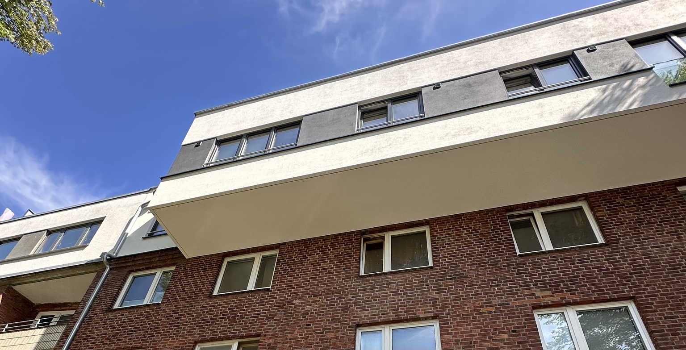
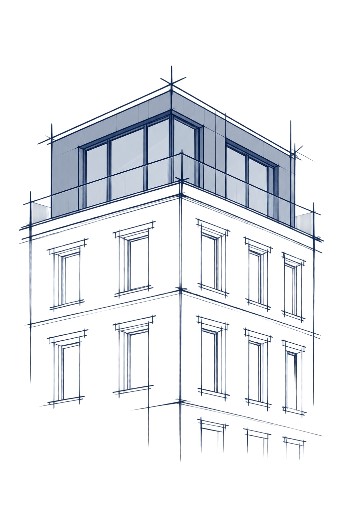

Machbarkeitsstudie
Potenziale belastbar bewerten
Der Einstieg in Ihre Entwicklung: Planungsrecht, Flächen, Kosten und Wirtschaftlichkeit als nachvollziehbare Entscheidungsgrundlage.
Mehr zur Machbarkeitsstudie
Elbhaus prüft Grundstücke und Bestandsimmobilien in Hamburg auf zusätzliche Bebauungsmöglichkeiten, Nachverdichtung und Aufstockung – von der ersten Potenzialanalyse bis zur Projektentwicklung.
Objekt prüfen lassenFür Grundstückseigentümer · Bestandshalter · Investoren

Viele Grundstücke und Bestandsgebäude verfügen über Entwicklungspotenziale, die auf den ersten Blick nicht erkennbar sind. Zusätzliche Bebauung, Nachverdichtung oder eine Aufstockung können neue Wohnfläche schaffen und den wirtschaftlichen Wert einer Immobilie verändern.
Elbhaus untersucht diese Potenziale unter Berücksichtigung von Planungsrecht, baulichen Voraussetzungen und Wirtschaftlichkeit. Wir entwickeln daraus nachvollziehbare Möglichkeiten für Ihr Grundstück oder Bestandsgebäude.
Gerade vor einem geplanten Verkauf kann es sinnvoll sein, zusätzliche Bebauungsmöglichkeiten zu klären und Baurecht zu schaffen oder abzusichern. Ein belastbar dargestelltes Entwicklungspotenzial kann den Grundstückswert, den erzielbaren Kaufpreis und damit Ihren Verkaufsertrag deutlich erhöhen.
Ihre Ziele stehen dabei am Anfang: zusätzliche Wohnfläche, langfristige Erträge oder die Vorbereitung einer weiteren Entwicklung.
Erste Einordnung von Grundstück, Bestand und Planungsrecht.
Flächenpotenziale, technische Rahmenbedingungen, Kosten und Wirtschaftlichkeit.
Planung, Behördenabstimmung und Genehmigungsstrategie.
Begleitung der weiteren Entwicklung und Umsetzung.
Jeder Schritt schafft die Grundlage für die nächste Entscheidung. Sie entscheiden, wie weit Ihr Vorhaben entwickelt wird.
Aus einer ersten Idee wird eine fundierte Entscheidung, wenn die wesentlichen Rahmenbedingungen zusammenkommen. Unsere Machbarkeitsstudie untersucht, welche zusätzlichen Flächen möglich erscheinen, welche Voraussetzungen zu klären sind und wie sich das Vorhaben wirtschaftlich einordnen lässt.
Sie erhalten einen Flächenkorridor, einen Kostenrahmen, eine Wirtschaftlichkeitsbetrachtung und eine klare Empfehlung für die nächsten Schritte.
Nach dem ersten Austausch vereinbaren wir Umfang und Vergütung der vertieften Prüfung. So wissen Sie vor Beginn, welche Leistung Sie beauftragen.
Der Einstieg in Ihre Entwicklung: Planungsrecht, Flächen, Kosten und Wirtschaftlichkeit als nachvollziehbare Entscheidungsgrundlage.
Mehr zur MachbarkeitsstudieZusätzliche Bebauung auf großen Grundstücken, in Baulücken oder auf rückwärtigen Flächen strukturiert prüfen.
Mehr zur NachverdichtungUnausgeschöpfte Dachbereiche für eine Aufstockung oder einen Dachgeschossausbau prüfen und weiterentwickeln.
Mehr zur AufstockungWer ein Grundstück oder Bestandsobjekt verkaufen möchte, sollte mögliche Erweiterungen und eine bessere Ausnutzung möglichst vor Beginn des Verkaufsprozesses klären. Solange zusätzliches Potenzial nur vermutet wird, kann es in der Kaufpreisbildung häufig nicht vollständig berücksichtigt werden.
Eine belastbare planungsrechtliche und wirtschaftliche Prüfung macht zusätzliche Flächen und realistische Entwicklungswege nachvollziehbar. Wird eine Entwicklungsoption weiter konkretisiert und das erforderliche Baurecht geschaffen oder hinreichend abgesichert, kann dies den Grundstückswert und den erzielbaren Verkaufspreis deutlich erhöhen.
Elbhaus strukturiert diesen Prozess – von der Potenzialanalyse über die Konkretisierung einer geeigneten Variante bis zur Vorbereitung der erforderlichen planungsrechtlichen und genehmigungsbezogenen Schritte. So kann der geschaffene Mehrwert im späteren Verkaufsprozess sichtbar und verhandelbar werden.
Die tatsächliche Wertwirkung hängt vom Objekt, dem erreichbaren Baurecht, den Kosten und der Marktsituation ab.
Entwicklung vor Verkauf vorbereitenPrüfung einer zusätzlichen Bebauung.
Prüfung von Aufstockung oder Dachgeschossausbau.
Prüfung einer Nachverdichtung.
Schematische Beispiele. Die tatsächliche Entwicklungsmöglichkeit ist immer objektspezifisch zu prüfen.
Zusätzliche Fläche oder gesichertes Baurecht können den Wert einer Immobilie verändern. Drei vereinfachte Beispiele zeigen, wie Entwicklungspotenziale sichtbar und wirtschaftlich nutzbar werden können.
1.200 m² Grundstück · 200 m² Bestand · ca. 200 m² zusätzliches Baurecht
1.200 m² Grundstück · zweiter Baukörper mit ca. 250 m² zusätzlicher Wohnfläche
600 → 750 m² Wohnfläche · 8 → 10 Wohneinheiten
Keine Gewinnprognose: Fiktive, vereinfachte Rechenbeispiele mit gerundeten Orientierungswerten. Bau-, Planungs-, Genehmigungs-, Finanzierungs-, Steuer- und sonstige Kosten sind in den Differenzbeträgen nicht berücksichtigt. Die tatsächliche Wirtschaftlichkeit hängt vom Objekt, dem erreichbaren Baurecht, der Umsetzung und der Marktsituation ab. Orientierungsrahmen: Immobilienmarktbericht Hamburg 2026, Gutachterausschuss für Grundstückswerte.
Elbhaus verbindet planerische Fachkenntnis mit wirtschaftlicher Analyse. Wir betrachten Ihr Grundstück im Zusammenhang mit Ihren Zielen, den baulichen Voraussetzungen und einer langfristig tragfähigen Entwicklung.
Transparente Annahmen, eine nachvollziehbare Bewertung und klare nächste Schritte bilden die Grundlage unserer Zusammenarbeit.
Als studierter Stadtplaner (M.Sc.) und Absolvent der Öffentlichen Verwaltung (M.A.) verbindet er planerische Fachkompetenz mit verwaltungswissenschaftlicher Perspektive. Berufliche Stationen umfassen Tätigkeiten im Stadtplanungsbüro, die Hochbauprojektleitung sowie Leitungsfunktionen in der öffentlichen Verwaltung. Seit 2025 arbeitet er an einer Promotion in den Wirtschaftswissenschaften.
Im persönlichen Austausch besprechen Sie die Ziele für Ihr Objekt und den passenden Einstieg in die weitere Prüfung.
Kurze Antworten zu Ablauf, Unterlagen und weiteren Entwicklungsschritten.
Im ersten Austausch besprechen wir die Objektadresse, Ihre Ziele und die vorhandene Bebauung. Anschließend legen wir fest, welche Fragen vertieft geprüft werden sollen und welcher Leistungsumfang sinnvoll ist.
Für die erste Kontaktaufnahme genügt die Objektadresse mit einer kurzen Beschreibung. Lageplan, Grundrisse, Flächenangaben oder frühere Genehmigungen helfen bei der weiteren Prüfung, sind für den Erstkontakt aber keine Voraussetzung.
Sie betrachtet insbesondere Planungsrecht, erreichbare Flächen, bauliche Voraussetzungen, Kostenrahmen und Wirtschaftlichkeit. Daraus entsteht eine nachvollziehbare Grundlage für die nächsten Entscheidungen.
Für eine Machbarkeitsstudie beträgt die Bearbeitungszeit in der Regel 10 bis 15 Werktage, sobald Aufgabenstellung und erforderliche Unterlagen vorliegen.
Nein. Eine Entwicklung kann zusätzliche Wohnfläche, langfristige Erträge oder eine bessere Nutzung des eigenen Grundstücks zum Ziel haben. Vor einem möglichen Verkauf kann die vorherige Klärung von Baurecht ebenfalls sinnvoll sein.
Ja. Auf Grundlage der Potenzialprüfung kann Elbhaus die weitere Projektentwicklung begleiten – von der Konkretisierung über Planung und Genehmigung bis zur Vorbereitung und Begleitung der Realisierung.
Senden Sie uns die Adresse des Objekts und eine kurze Beschreibung. Wir melden uns persönlich bei Ihnen.
Im ersten Gespräch klären wir Ihre Ziele und die nächsten Schritte. Umfang und Vergütung einer vertieften Prüfung vereinbaren wir vor Beginn.
Elbhaus Projektentwicklung GmbH
Barmbeker Str. 142
22299 Hamburg